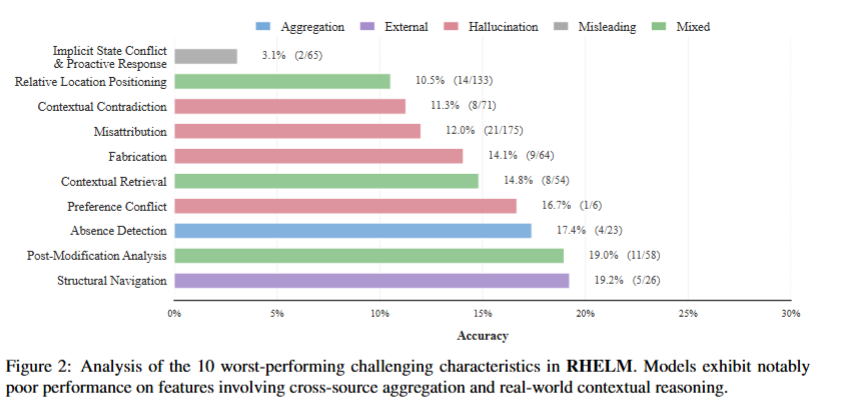
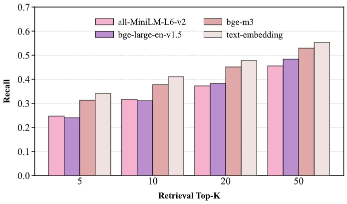

Question landscape
Distribution across seven challenging QA categories · select a bar to explore
A benchmark for realistic, heterogeneous, and evolving long-horizon memory in AI assistants.

Ten synthetic personas pair detailed personal histories with natural requests, routines, relationships, and life events.
Mean daily updates across ten personas, with observed minimum–maximum ranges.
RHELM enriches a seed persona and simulates its evolving trajectory with the iterative pLan, rOllout, evOlve, and Prune stages of the LOOP module.
P
Time span [τs, τe]
Rollout probability p
Prune schedule ρ
τ ≤ τe
τ ← τ′, then repeat from pLan until the end date
Seven categories and 27 challenge characteristics test far more than simple fact lookup across three complementary QA domains.
| QA domain | Category | Challenge characteristics |
|---|---|---|
| Dialogue History QA18 characteristics |
Fact | Multi-Hop TraversalEntity DisambiguationState-Dependent AttributeNegative Constraints |
| Temporal | Indirect IdentificationSequence ComprehensionLong-Horizon SynthesisImplicit Temporal Lookup |
|
| Hallucination | MisattributionFabricationPreference ConflictContextual Contradiction |
|
| Aggregation | Conditional CountingComparative Trend AnalysisExtreme ValueAbsence Detection |
|
| Misleading | Implicit State ConflictProactive Response |
|
| External Source QA6 characteristics |
External Source |
Attachments
Fact RetrievalTable ReasoningStructural NavigationTable Aggregation Emails
Cross-time Count / LocalizationRelationship Analysis |
| Hybrid Context QA3 characteristics |
Mixed | Relative Location PositioningContextual RetrievalPost-Modification Analysis |
Explore the composition of RHELM and browse representative questions from its synthetic, evolving memory histories. Select any QA category to jump directly into matching examples.
The explorer data could not be loaded. Please refresh and try again.
Distribution across seven challenging QA categories · select a bar to explore
Evidence is distributed across three complementary source formats
Frequent reasoning characteristics found across the validated QA set
Question
Examples are drawn from fully synthetic personas and histories. Answers are hidden by default.
We compare RAG baselines, long-context models, and dedicated memory frameworks with and without external sources. All values are accuracy (%).
| Model | FC | TP | AG | HL | MI | EX | MX | Avg |
|---|---|---|---|---|---|---|---|---|
| RAG Baselines | ||||||||
| GPT-4.1-mini k=5 | 35.8 | 17.3 | 17.7 | 15.2 | 3.1 | 8.0 | 10.0 | 16.3 |
| GPT-4.1-mini k=20 | 44.0 | 32.4 | 31.8 | 18.3 | 3.1 | 12.1 | 12.9 | 23.5 |
| GPT-4.1-mini k=50 | 59.9 | 41.6 | 40.1 | 15.7 | 1.5 | 12.9 | 16.7 | 28.9 |
| Hybrid k=5 | 34.3 | 20.5 | 14.1 | 19.8 | 1.5 | 8.0 | 10.5 | 16.7 |
| Hybrid k=20 | 47.3 | 35.7 | 31.8 | 19.3 | 3.1 | 10.4 | 15.2 | 24.8 |
| Hybrid k=50 | 56.5 | 41.1 | 35.9 | 15.2 | 3.1 | 13.7 | 16.7 | 27.8 |
| GPT-4.1 k=20 | 51.7 | 34.1 | 35.9 | 23.9 | 7.7 | 16.1 | 17.6 | 28.2 |
| Gemini-2.5-Pro k=20 | 45.4 | 35.1 | 27.1 | 66.0 | 23.1 | 12.4 | 18.1 | 32.6 |
| Claude-Opus-4.5 k=20 | 50.7 | 37.8 | 33.3 | 68.0 | 47.7 | 13.7 | 16.2 | 36.2 |
| Long-Context Models | ||||||||
| Gemini-2.5-Flash-Lite 1M | 33.2 | 22.7 | 15.2 | 17.3 | 0.0 | 9.5 | 5.6 | 16.0 |
| Qwen-2.5-14B-Instruct 1M | 29.5 | 15.1 | 29.7 | 3.1 | 0.0 | 11.7 | 9.1 | 15.3 |
| GPT-4.1-mini 1M | 55.1 | 31.9 | 40.1 | 4.1 | 1.5 | 11.2 | 12.4 | 24.0 |
| Qwen3.5-397B-A17B 1M | 49.8 | 33.0 | 35.9 | 73.6 | 23.1 | 10.8 | 14.8 | 34.6 |
| Claude-Opus-4.6 1M | 72.5 | 67.6 | 58.3 | 67.0 | 69.2 | 16.1 | 21.4 | 49.7 |
| GPT-5.5 1M | 82.6 | 83.8 | 65.1 | 77.7 | 26.2 | 24.9 | 29.1 | 57.0 |
| Memory Frameworks | ||||||||
| MemGPT | 31.9 | 18.4 | 22.9 | 0.5 | 0.0 | 7.6 | 8.1 | 13.9 |
| Mem0 | 41.6 | 31.4 | 28.1 | 10.7 | 3.1 | 10.8 | 13.3 | 21.1 |
| MemU | 49.3 | 32.4 | 33.9 | 8.6 | 4.6 | 12.0 | 11.4 | 23.1 |
| Model | FC | TP | AG | HL | MI | EX | MX | Avg |
|---|---|---|---|---|---|---|---|---|
| RAG Baselines | ||||||||
| GPT-4.1-mini k=5 | 34.8 | 14.1 | 19.3 | 11.7 | 3.1 | 16.9 | 12.4 | 17.5 |
| GPT-4.1-mini k=20 | 42.5 | 28.7 | 30.7 | 13.2 | 3.1 | 28.5 | 13.8 | 25.1 |
| GPT-4.1-mini k=50 | 54.6 | 39.5 | 38.0 | 11.2 | 1.5 | 38.6 | 22.4 | 32.6 |
| Hybrid k=5 | 31.9 | 19.5 | 14.1 | 19.3 | 1.5 | 16.1 | 10.5 | 17.6 |
| Hybrid k=20 | 45.9 | 30.8 | 26.6 | 16.8 | 4.6 | 26.9 | 15.7 | 26.0 |
| Hybrid k=50 | 53.1 | 37.8 | 33.9 | 8.6 | 3.1 | 33.3 | 18.6 | 29.6 |
| GPT-4.1 k=20 | 50.2 | 29.2 | 32.3 | 19.8 | 6.2 | 32.5 | 19.5 | 29.5 |
| Gemini-2.5-Pro k=20 | 43.0 | 31.9 | 26.0 | 64.5 | 26.2 | 31.3 | 20.5 | 35.5 |
| Claude-Opus-4.5 k=20 | 50.2 | 30.8 | 31.8 | 60.9 | 41.5 | 33.7 | 21.0 | 38.1 |
| Long-Context Models | ||||||||
| Gemini-2.5-Flash-Lite 1M | 31.7 | 14.1 | 23.4 | 7.6 | 0.0 | 19.0 | 13.1 | 17.3 |
| Qwen-2.5-14B-Instruct 1M | 16.9 | 7.0 | 15.6 | 1.0 | 0.0 | 5.2 | 6.2 | 8.1 |
| GPT-4.1-mini 1M | 49.3 | 27.0 | 33.9 | 2.0 | 1.5 | 43.4 | 0.3 | 33.9 |
| Qwen3.5-397B-A17B 1M | 50.2 | 28.7 | 37.0 | 58.9 | 24.6 | 48.2 | 46.7 | 44.3 |
| Claude-Opus-4.6 1M | 68.1 | 64.3 | 56.8 | 71.1 | 67.7 | 74.7 | 77.6 | 69.1 |
| GPT-5.5 1M | 76.8 | 73.0 | 56.8 | 75.6 | 29.2 | 81.5 | 86.7 | 73.3 |
| Memory Frameworks | ||||||||
| MemGPT | 27.5 | 14.6 | 28.7 | 1.5 | 1.5 | 18.9 | 17.1 | 17.3 |
| Mem0 | 46.4 | 29.2 | 27.1 | 10.2 | 3.1 | 31.3 | 35.7 | 28.9 |
| MemU | 54.6 | 36.2 | 35.4 | 10.2 | 3.1 | 36.5 | 36.7 | 33.6 |
Long-context models use a batch size of 10. Qwen3.5-397B-A17B is additionally affected by JSON parsing failures during evaluation.
Performance degrades when systems must retrieve sparse evidence, reconcile changing states, and reason across multiple sources.

The hardest characteristics cluster around cross-source synthesis, conflicting history, misleading requests, and fabricated facts.

Even at k=50, retrieved evidence remains limited and insufficient for precise resolution across embedding models.
Each validated example is distributed as one JSON object per line with its answer, evidence references, date, category, and challenge characteristics.
{
"id": "fact_19130b",
"question": "... what did I actually have for my first meal of the day?",
"answer": "Leftover lentil soup",
"question_date": "2024-10-28",
"question_type": "fact",
"supporting_evidence": ["2024-05-26:5"],
"characteristics": ["State-Dependent Attribute"]
}@article{rhelm2026,
title = {Beyond Static Dialogues: Benchmarking Realistic, Heterogeneous, and Evolving Long-Horizon Memory},
author = {Han Zhang and Zihao Tang and Xin Yu and Xiao Liu and Yeyun Gong and Haizhen Huang and Yan Lu and Weiwei Deng and Feng Sun and Qi Zhang and Hanfang Yang},
journal = {arXiv preprint arXiv:2605.31086},
year = {2026}
}Use the benchmark, compare your system, and join the community discussion around realistic long-horizon memory evaluation.